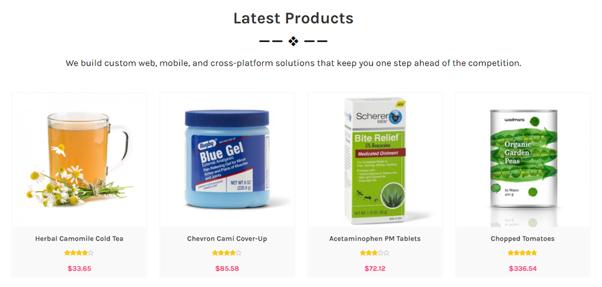

MetroStore
- Created: 02/14/2011
- Latest Update: 02/16/2017
- By: SparkleThemes
- Email: support@sparklewpthemes.com

Theme Installation
There are two methods to install MetroStore theme. You may either upload the zipped theme file using the WordPress theme installer (Recommended), or you can upload the unzipped theme folder via FTP (Advanced).
Method 1 ( Recommended) : Install Using the WordPress Theme Installer
- Log into your WordPress site and opens the Administration Panel.
- Go to Appearance > Themes in the WordPress Dashboard.
- Click on the Add New button.
- Search for the MetroStore
- Select the MetroStore theme
- Click Install Now

Method 2: Install Using File Transfer Protocol (FTP)
- Unzip “metrostore.zip” file on your computer.
- Login using FTP client to access your host web server.
- Locate the wp-content folder in your WordPress install files.
- Upload the un-zipped MetroStore folder into the: wp-content/themes folder.
Activate the theme
- Log in to the WordPress Administration Panel.
- Go to Appearance > Themes in the WordPress menu
- Hover over the theme thumbnail and click the Activate button.
Additional information : WordPress Codex – Using Themes
Installing Plugins
To install a plugin in your WordPress admin panel and follow the following steps.
Plugin Installing Method
- Log into your WordPress site and opens the Administration Panel.
- Click Navigate to Plugins > Add New in the WordPress Dashboard.
- Search for the name of the plugin you wish to install which will return a list of potential plugins.
- Click Details to read more about a plugin.
- Click “Install Now” if you wish to install the plugin.
- It may ask if you are sure, and you may proceed. The installation will commence once you confirm to proceed.
- After the plugin is downloaded. Go to Plugins>Installed Plugins. Click “Activate Plugin” to make it available for use.
Recommended Plugins : We recommend you to download the following plugins when necessary:
- Jetpack by WordPress.com, by: Automattic (The plugin provides a variety of complementary features for your Theme.)
- Regenerate Thumnails by Alex Mills (Viper007Bond) (If you have existing content, this will help you update your image thumbnails sizes.)
- WooCommerce by woocommerce.com, by: Automattic (The most customizable eCommerce platform for building your online siness. Get started today for free.)
- YITH WooCommerce Quick View by yithemes.com, by: YITHEMES (This plugin adds the possibility to have a quick preview of the products right from product list)
- YITH WooCommerce Compare by yithemes.com, by: YITHEMES (YITH WooCommerce Compare allows you to compare more products of your shop in one complete table.)
- YITH WooCommerce Wishlist by yithemes.com, by: YITHEMES (YITH WooCommerce Wishlist add all Wishlist features to your website. )
General Settings
Logo/Site Title/Favicon (To set up Site Identity)
- Go to Appearance> Customize > General Settings > Site Identity
- Click Select logo by clicking Select Logo.
- Upload and select the desired image.
- Enter the Site Title and Tagline
- Check Display Header Text for the Site title and Tagline to appear on your homepage.
- Click Select Image under Site Icon
- Upload and select the desired image. (The Site Icon/ favicon is used as a browser and app icon for your site. The recommended Site Icon size is 512*512 pixels.)
- Click Save & Publish.
Themes Colors
- Go to Appearance > Customize > General Settings > Themes Colors
- Change the Background Color or Site Title & Tagline Color by clicking on the respective Select Color button
- Click Save & Publish.
Background Image
- Go to Appearance > Customize > General Settings > Background Image
- Click Select Image.
- Upload and Select a Background Image & Manage the image position & other settings
- Click Save & Publish.
WebLayout Options
- Go to Appearance > Customize > General Settings
- Open General Settings > WebLayout Options
- Select the WebSite Layout Options (Boxed Layout, FullWidth Layout) per as you want
- Click Save & Publish.
To set the Header Image
- Go to Appearance > Customize > General Settings > Header Image
- Upload the header image from the Add new image button. After selecting the header image, it will ask you to crop. If you like to crop it, then, you can crop else leave it as you want for your site to best suit it.
- Click Save & Publish.
Header Settings
Quick Contact Info Settings
- Log into your WordPress site and opens the Administration Panel.
- Go to Dashboard > Appearance > Customize
- Open > Header Settings Area > Quick Contact Info
- Quick Contact Info > Manage all the options per as you want.
- Click Save & Publish.
Header Services Area Settings
- Log into your WordPress site and opens the Administration Panel.
- Go to Dashboard > Appearance > Customize
- Open > Header Settings Area > Header Services Area
- Header Services Area > Manage all the options per as you want.
- Click Save & Publish.
Custom Menu
By default, the menus will fallback to Pages. That means just after activation of the theme, you will see all the pages as menus. If you want selective menus with combination of links, pages, categories then custom menu is what you should be looking for.
Set up Custom Menu
- Log into your WordPress site and opens the Administration Panel.
- Go to Appearance > Menus in the WordPress menu
- Click on Create a new menu link
- Give a name to your menu in Menu Name and click Create Menu button
- Now choose the pages, categories, custom links from the leftside of your screen by selecting the checkbox and click on Add Menu
- Choose the menu Theme Location per as requirement.
- Click Save Menu after adding required pages, categories in the menu

Additional information : WordPress Custom Menu
Configure Slider Settings

Add New Slider
- Log into your WordPress site and opens the Administration Panel.
- First of all, create a post for slider
- Add Post Title,Excerpt/Content and feature Image for slider in post field.
- Create a category slider or per as you want and choose slider category for specific post & save it.
- Click Save > Publish.
We have managed the slider button from post content. if you want to add button in slider add the following div structure.
- <div class="ms-btn" > <a href="#">Buy Themes</a> </div>
Configure Slider Section
- Log into your WordPress site and opens the Administration Panel.
- Go to Dashboard > Appearance > Customize
- Open > Home Slider Settings
- Home Slider Settings > Manage all the options per as you want.
- Click Save > Publish.
Configure HomePage Settings
MetroStore Provides a "Home Page" template for your home page. Please follows these steps to configure your home page with "home page" template.
HomePage Setting
- Log into your WordPress site and opens the Administration Panel.
- Go to Dashboard > Pages > Add New
- Enter the Page Title for the Page. You do not require to enter anything in the content section for creating a home page.
- Select the Home Page Template from the Page Attributes section.
- Click Publish

Configuring the front Page display setting
- Log into your WordPress site and opens the Administration Panel.
- Go to Appearance > Customize > Static Front Page.
- Select A static page under Front Page displays.
- Click Save & Publish.
Note : Remember that MetroStore WooCommerce themes fully base on Widget so first configer home page using widget.
About Section With Services
Create Page for Services
- Log into your WordPress site and opens the Administration Panel.
- First of all, create a Page for Services
- Add Page Title,Excerpt/Content Services Section in page field.
- Click Save > Publish.
Configure About Section With Services
- Log into your WordPress site and opens the Administration Panel.
- Go to Dashboard > Appearance > Widgets
- Open > Widgets > Metrostore HomePage Widget Area
- Open > Metrostore HomePage Widget Area > Drag & Drop "MS : About Section" & Manage all settings About & Service Area in Widget Options Per as you Want
- Click Save > Publish.
WooCommerce Category Collection
Configure WooCommerce Category Collection
- Log into your WordPress site and opens the Administration Panel.
- Go to Dashboard > Appearance > Widgets
- Open > Widgets > Metrostore HomePage Widget Area
- Open > Metrostore HomePage Widget Area > Drag & Drop "MS : Woo Category Collection" & Manage WooCommerce Category Collection Options Per as you Want
- Click Save > Publish.
WooCommerce Category Collection in Tabs
Configure WooCommerce Category Collection in Tabs
- Log into your WordPress site and opens the Administration Panel.
- Go to Dashboard > Appearance > Widgets
- Open > Widgets > Metrostore HomePage Widget Area
- Open > Metrostore HomePage Widget Area > Drag & Drop "MS : Woo Tabs Category" & Manage WooCommerce Category Collection Tabs Options Per as you Want
- Click Save > Publish.
WooCommerce Product Different in (Latest, Features, Upsell, OnSale) Tabs
Configure WooCommerce Default Display Product Type
- Log into your WordPress site and opens the Administration Panel.
- Go to Dashboard > Appearance > Widgets
- Open > Widgets > Metrostore HomePage Widget Area
- Open > Metrostore HomePage Widget Area > Drag & Drop "MS : Woo Default Tabs" & Manage WooCommerce Default Tabs Settings Options Per as you Want
- Click Save > Publish.
WooCommerce Product Type Section (Latest, Features, Upsell, OnSale or Category)

Configure WooCommerce Product Type Section
- Log into your WordPress site and opens the Administration Panel.
- Go to Dashboard > Appearance > Widgets
- Open > Widgets > Metrostore HomePage Widget Area
- Open > Metrostore HomePage Widget Area > Drag & Drop "MS : Woo Product Area" & Manage WooCommerce Product Area Sections Options Per as you Want
- Click Save > Publish.
Full Promo Video Widget Area
Configure Full Promo Video Widget Area
- Log into your WordPress site and opens the Administration Panel.
- Go to Dashboard > Appearance > Widgets
- Open > Widgets > Metrostore HomePage Widget Area
- Open > Metrostore HomePage Widget Area > Drag & Drop "MS : Promo Video Area" & Manage all Settings Options Per as you Want
- Click Save > Publish.
Skills Section
Configure Skills Section
- Log into your WordPress site and opens the Administration Panel.
- Go to Dashboard > Appearance > Widgets
- Open > Widgets > Metrostore HomePage Widget Area
- Open > Metrostore HomePage Widget Area > Drag & Drop "MS : Skills Section" & Manage all Skills Section Settings Options Per as you Want
- Click Save > Publish.
Blogs Widget Section
Configure Blogs Widget Section
- Log into your WordPress site and opens the Administration Panel.
- Go to Dashboard > Appearance > Widgets
- Open > Widgets > Metrostore HomePage Widget Area
- Open > Metrostore HomePage Widget Area > Drag & Drop "MS : Blogs Posts" & Manage all Blogs Posts Settings Options Per as you Want
- Click Save > Publish.

Quick Contact Information
Configure Quick Contact Information
- Log into your WordPress site and opens the Administration Panel.
- Go to Dashboard > Appearance > Widgets
- Open > Widgets > Metrostore HomePage Widget Area
- Open > Metrostore HomePage Widget Area > Drag & Drop "MS : Quick Contact Info" & Manage all Quick Contact Information Settings Options Per as you Want
- Click Save > Publish.
Breadcrumb Settings
Configer Breadcrumb Settings
- Log into your WordPress site and opens the Administration Panel.
- Go to Dashboard > Appearance > Customize
- Open > Breadcrumbs Settings
- Breadcrumbs Settings > Manage all the options per as you want.
- Click Save > Publish.

Page/Post Specific Meta
In this theme, we have included Metabox fields under Theme Layout for each page/post. They are:
Page/Post Layout Settings
-
This option allow to choose the page/post layout. This makes your specific page/post different from other pages/posts.
- Left Sidebar
- Right Sidebar
- Fulll Width
Advanced Settings
This theme supports the Custom CSS, which overwrites the CSS of the main stylesheet file, so that you can apply some CSS to change the look of the site as you desire. Also, this changes will still remain even if you update the theme.
Additional CSS
- Go to Appearance > Customize > Additional CSS
- Open > Additional CSS > Add Custom CSS per as you want
- Click Save & Publish.